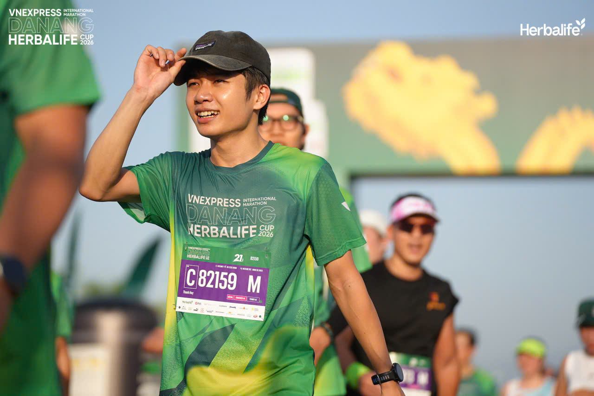
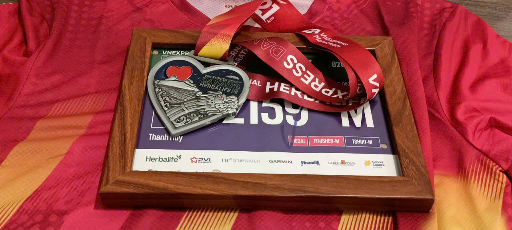
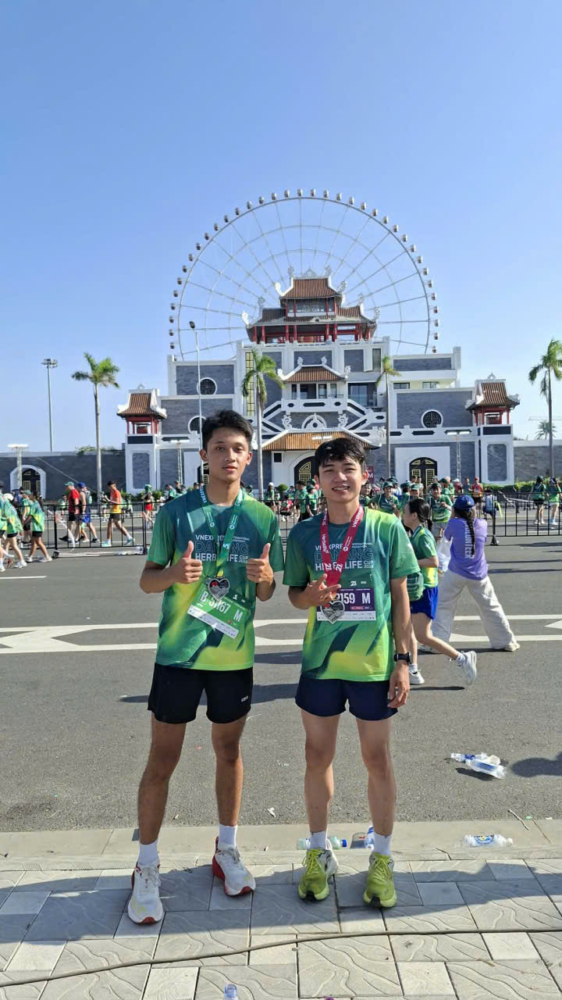

Personal archive
Places, miles, and melodies.
A small collection of where I come from and what I enjoy outside of work.
01
Khâm Đức
The mountain town where I grew up.
02
Running
Miles, movement, and the joy of reaching the finish line.



VnExpress International Marathon Da Nang, 2026.
03
Music
Learning to play instruments, one song at a time.